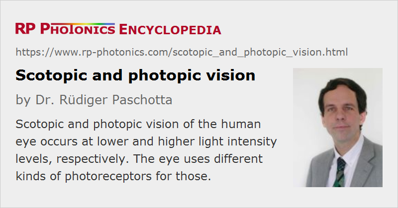

Scotopic and Photopic Vision
Definition: vision of the human eye at lower and higher light intensity levels, respectively
More general term: color vision
German: skotopisches und photopisches Sehen
Category: vision, displays and imaging
How to cite the article; suggest additional literature
Author: Dr. Rüdiger Paschotta
The vision of the human eye is based on four different kinds of photoreceptors: rods and three types of cones (L, M and S cones). Depending on the available light levels (more precisely, the incoming luminance), the brain uses different photoreceptor signals for determining the brightness of seen objects.
Scotopic Vision
The rods, containing rhodopsin photoreceptors, are substantially more light-sensitive than the cones and are therefore used for vision at low light levels, e.g. at night with a minimum amount of illumination, where the cones hardly deliver any usable signals. Because the eye has only one type of those rods, it cannot obtain any spectral information: it cannot “know” whether a certain brightness results from green light, where the rods are most sensitive, or from light in the red or blue spectral region, for example, where the rod sensitivity is comparatively low, but the light intensity may be correspondingly higher. Therefore, in that mode of vision, called scotopic vision, all objects are perceived as gray, a kind of neutral color impression.
Purely scotopic vision occurs if the input luminance stays below 10−3 cd/m2. After seeing brighter light, the eye requires some time to adapt to the new light conditions – full adaptation can take around 30 minutes. Therefore, only after that time one begins seeing something in the dark.
Photopic Vision
At higher light levels, which are sufficient for substantially exciting the cone receptors, their outputs are used for color vision and also for the determination of apparent brightness. That mode of operation is called photopic vision.
Purely photopic vision is possible at luminance values of at least a couple of cd/m2. There is also an intermediate regime, called mesopic vision, which is a kind of combination of scotopic and photopic vision.

Different Vision of Animals
The eyes of various animals differ substantially from those of human beings. For example, the retina of a cat's eye contains a larger proportion of rod receptors, leading to an improved sensitivity at low lighting conditions – at the expense of substantially reduced color vision, which is dichromatic instead of trichromatic.
Luminosity Functions
For both scotopic and photopic vision, there are luminosity functions describing the spectral sensitivity of the eye. While the scotopic response peaks at a wavelength of approximately 500 nm, the maximum photopic response is achieved around 555 nm. Both maxima are in the green spectral region.
Questions and Comments from Users
Here you can submit questions and comments. As far as they get accepted by the author, they will appear above this paragraph together with the author’s answer. The author will decide on acceptance based on certain criteria. Essentially, the issue must be of sufficiently broad interest.
Please do not enter personal data here; we would otherwise delete it soon. (See also our privacy declaration.) If you wish to receive personal feedback or consultancy from the author, please contact him e.g. via e-mail.
By submitting the information, you give your consent to the potential publication of your inputs on our website according to our rules. (If you later retract your consent, we will delete those inputs.) As your inputs are first reviewed by the author, they may be published with some delay.
See also: color vision, luminosity functions, spectral response of a photodetector, night vision devices
and other articles in the category vision, displays and imaging
|  |
If you like this page, please share the link with your friends and colleagues, e.g. via social media:
These sharing buttons are implemented in a privacy-friendly way!